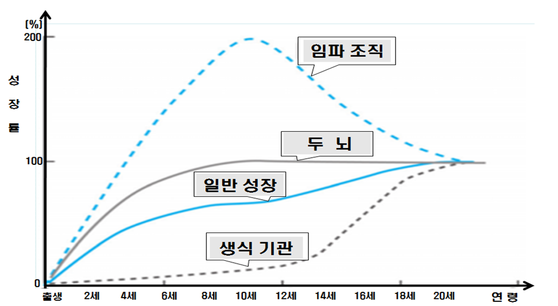

성장, 발달은 유전과 환경적 요인과 개인차
성장, 발달은 다양한 양상으로 매우 복잡한 과정을 거쳐 이루어지는데 그 과정은 보편적으로 적용되는 예측 가능하고 질서 정연하게 진행된다. 발달 과정은 유전적 및 환경적 요인에 따라 개인차가 있지만 학자들이 공통적으로 주장하는 발달의 원리는 다음과 같다.

1) 발달은 일정한 방향에 따라 진행된다.
발달의 방향은 두미발달, 근원발달, 세분화발달의 원칙에 따라 진행되며 그 내용은 다음과 같다.
(1) 두미(cephalocaudal)발달의 원칙
영아는 머리에서 발 방향(head–ato–tail)으로 발달이 진행된다. 즉, 머리 부분이 몸통이나 사지보다 먼저 발달한다. 목을 가눈 후에 몸을 뒤집을 수 있고, 앉을 수 있는 다음에 비로소 두 다리로 걸을 수 있게 되는 순으로 발달이 이루어진다.
(2) 근원(proximodistal)발달의 원칙
신체 중심부가 말초신경보다 먼저 발달한다. 즉, 머리와 몸체는 팔·다리보다 먼저 발달하고, 팔·다리는 손가락·발가락보다 먼저 발달이 이루어진다. 발달 방향이 몸의 중심 부분에서 가까운 가슴 → 팔과 손목의 움직임 → 다리와 발→ 손가락과 발가락을 사용하는 능력이 순서대로 발달한다.
(3) 세분화(general to specific)발달의 원칙
일반적인 몸 전체 활동에서 세분화된 특수 활동으로 이루어진다. 초기의 행동은 몸 전체를 사용하는 분화되지 않은 행동이지만 점차 분화되고, 정밀한 행동으로 변화되어 간다. 어떤 물건을 잡으려고 할 때, 부자연스럽게 손 전체를 이용하지만, 시간이 지난 후에는 물건을 잡을 때 엄지손가락과 검지손가락으로 집을 수 있을 정도로 근육이 세부적으로 발달하게 된다.
2) 발달은 순서적이고 누적적이다.
발달은 질서 정연하고 일정하게 순서적(sequential)으로 일어난다. 다음 단계에서 일어나는 행동은 그 이전에 이루어졌던 행동에 기초하여 또 다른 새로운 내용으로 누적성(cumulative)을 내포한다. 머리를 가누고 난 후에 몸을 뒤집다가 앉을 수 있게 된 다음에 물체를 잡고 서 있다가 한 발씩 걷고, 달리는 등 일정한 순서로 성장한다.
예를 들면 언어발달은 울음, 쿠잉(cooing)을 나타내다가 옹알이(babbling)로 의사표현을 한다. 점차 한두 단어로 말(language)을 한 후 복잡한 문장을 사용할 수 있는 동시에 보다 새로운 형태로 관례를 위한 의사소통을 하게 된다.
3) 발달은 연속적이지만 발달 속도는 일정하지 않다.
발달은 분화와 통합이 이루어지는 연속적인 과정이지만 발달의 속도는 연령에 따라 발달 내용이나 발달 시기가 달라진다. 출생 후 첫돌까지 급속한 성장을 보이고 그 이후 완만하게 성장하다가 사춘기에 성장 급등을 한다. 임파 조직은 출생과 더불어 사춘기까지 체내 영양 흡수와 면역력과 관련된 기능이 꾸준하게 상승 곡선을 나타낸다.
- 생식기관은 영아기부터 12세까지 완만한 속도로 발달하다가 사춘기에는 빠르게 발달한다.
- 두뇌의 발달은 태내기와 더불어 출생 후 3세까지 가장 급격한 발달을 이루고 언어발달은 신체의 이동능력(locomotion)발달 후 어휘력이 폭발적으로 풍부해진다.
- 청년기에는 논리적인 문제해결 능력까지 가능하다.
이와 같이 발달은 매일 지속적인 과정이지만, 생물학적 속도는 일정하지 않다.
발달의 속도는 성장발달 곡선처럼 다양한 신체기관과 신체 부위에 따라 속도가 서로 다른 비동시적 성장(asynchronous growth)을 한다.
4) 발달에는 개인차가 있다.
발달 순서는 공통적으로 일정한 순서로 이루어지지만, 발달 속도와 행동 양상은 개인마다 정도의 차이가 있다. 개인차는 유전적으로 타고난 것과 후천적으로 경험에 의한 것일 수도 있다. 사람마다 가지고 있는 유전인자와 환경이 다르기 때문에 일란성 쌍생아들 간에도 개인차가 나타난다. 특히 사춘기의 2차 성징이 나타나는 성적성숙에는 신체적, 정신적으로 상당한 개인차가 존재한다.
5) 발달의 각 영역은 상호작용하는 연관성이 있다.
발달은 생물·신체적 발달, 언어·인지적 발달, 사회·정서적 발달의 세 영역으로 서로 복잡하게 얽혀 상호작용을 한다. 생물·신체적 발달은 감각능력 및 신체적 움직임, 운동기술의 변화와 관련되며, 지적 발달 또는 인성발달에 영향을 미친다.
뇌신경발달, 감각기관의 발달, 신장과 체중, 근육, 골격, 사춘기에 나타나는 호르몬 등에 의한 신체변화와 운동능력은 유전 건강요인에 의해 영향을 받는다. 신체의 움직임은 운동을 일으키고 언어·인지적 발달은 지식을 얻고 환경에 대처하기 위한 사고하는 영역을 다룬다.
사회·정서적 발달은 선천적인 요인과 사회문화적인 관계를 통한 자아인식 및 성격발달능력을 다룬다. 한부분의 영역의 지체는 다른 영역의 발달을 지연시키거나 더욱 촉진시키게 하는 밀접한 관련성을 맺고 상호작용한다.
6) 발달에는 결정적인 시기가 있다.
결정적 시기(critical period)는 발달이 가장 쉽게 이루어지는 시간을 말한다. 생의 초기에 내적, 외적 사건으로 정상적인 발달이 형성되지 못하여 그 영향으로 신체발달, 언어발달, 인지발달 등이 지연되었을 경우 이후 발달을 회복하기에 많은 시간이 필요하거나 회복할 수 없는 손상을 입게 된다.
예를 들면 19세기 프랑스 시골에서 발견된 12세 된 늑대소년에게 언어훈련을 시켰지만 언어를 익히지 못했던 것처럼 언어발달에 결정적 시기가 존재한다는 점을 뒷받침하였다.
위의 기술한 내용처럼 발달은 각 단계별로 성취해야 할 발달과업이 있다.
발달단계에 있어서 생의 초기에 부정적 영향으로 원만하게 이루지 못하면 그 다음 발달단계에 좋지 않은 현상이 나타나게 된다. 또한 태어난 후 민감한 시기에 환경 및 문화는 영유아의 사고력이나 사회적 행동에 많은 영향을 미치는 것으로 나타났다.
출처: 영유아발달(2018). 김영애, 선애순, 정효정. 양서원.
2022.02.19 - [분류 전체보기] - 자아 개념 - 기질 및 성격 형성은 사회성 발달의 근원
자아 개념 - 기질 및 성격 형성은 사회성 발달의 근원
자아 개념 자아 개념(自我槪念)또는 자기 개념(Self-concept)은 소유(possession)로 사회적 태도, 능력, 느낌에 대한 주관적인 인식이다. 아이가 말을 하기 시작하면서 자신에 대해 말로 표현함으로써
think-sis.tistory.com